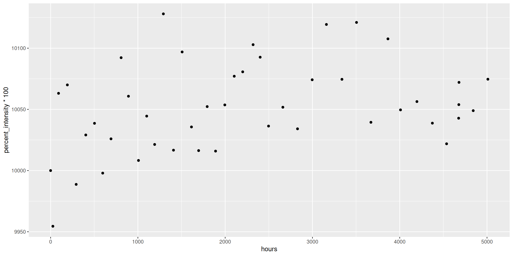
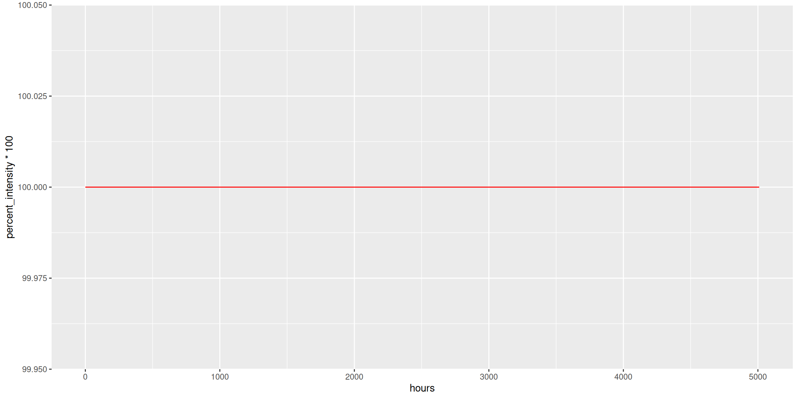
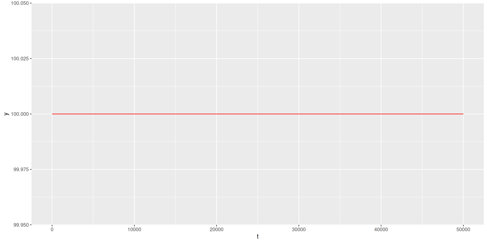
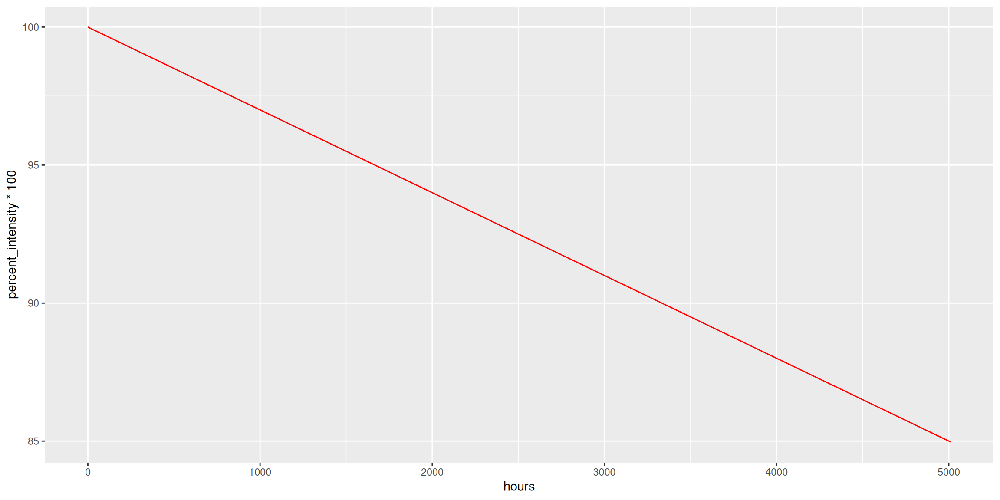
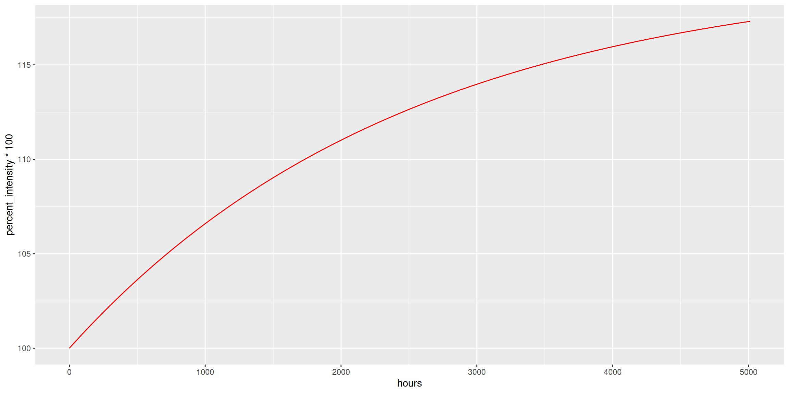
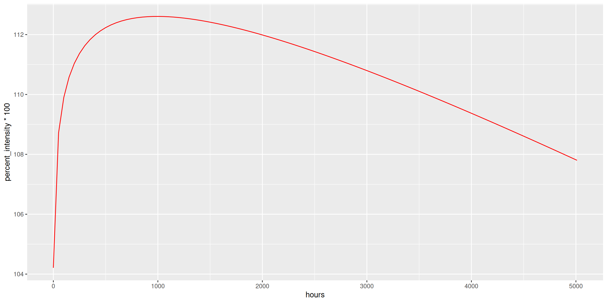
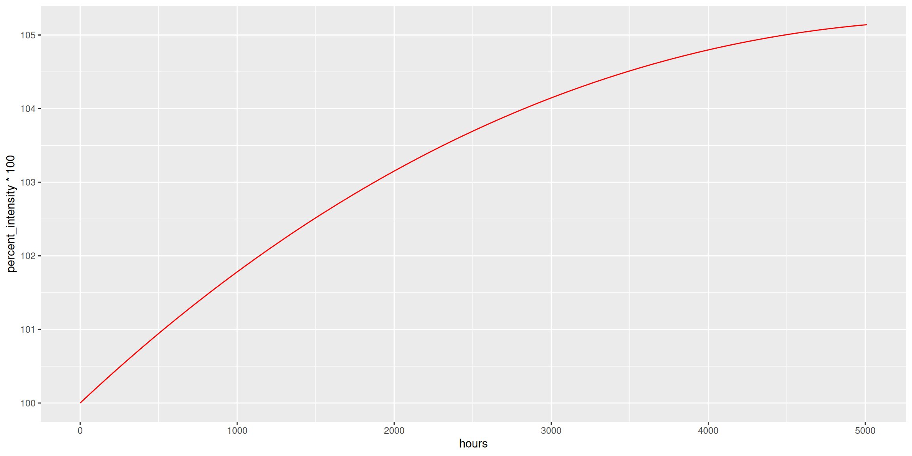
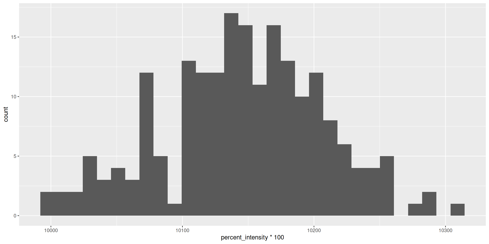

Code
# Use this R-Chunk to import all your datasets!
#Enter the seed as instructed by your professor.
bulb <- led_bulb(1,seed=1234)
dist <- led_time(2100)# Use this R-Chunk to import all your datasets!
#Enter the seed as instructed by your professor.
bulb <- led_bulb(1,seed=1234)
dist <- led_time(2100)
How long does an LED light bulb last? The US Department of Energy launched the Bright Tomorrow Lighting Prize (or L Prize) in 2008 to “spur lighting manufacturers to develop high-quality, high-efficiency solid-state lighting products to replace the common incandescent light bulb.” In addition to requiring less than 10 watts, the winning bulb needed to have a lifetime longer than 25,000 hours. Phillips won the prize in 2011, after undergoing 18 months of rigorous testing. Note however that there are only 8760 hours in a year (24 hours a day for 365 days), which means it takes almost 100% uptime for 3 years to hit 25,000 hours. How do we know the bulb met the hours requriment with only 18 months of testing? This is where modeling comes into play.
It turns out that when you first turn on an LED bulb, the lumen output slightly increases for a while, going above 100% of the initial brightness. After peaking above 100%,the lumen output stays relatively constant before it starts a slow decent downwards, as demonstrated by the graph below INSERT GRAPHIC.
In this project, we’ll be using the data collected from the INSERT DATA DESCRIPTION to analyze the function \(f(t)\) that gives the lumen output of LED bulbs (as a percent of the original lumens) after \(t\) hours.
Below is a scatterplot showing the intensity, normalized to the initial intensity, for a random bulb at several time points from 0 to 5010 hours.
#Create a scatterplot of the bulb data.
ggplot(bulb, aes(x = hours, y = percent_intensity*100)) +
geom_point()
#Change y-axis
#Add title, y-labelWe can see from the scatterplot that the fairly constant over the time period with measurements ranging between 98% and 101% of the initial intensity. We can also see a slight decreasing trend in the intensity after 3000 hours.
We will consider five deterministic models describing way the intensity of the bulb changes over time.
#Define the deterministic funciton.
f1 <- function(t){rep(100,length(t))}
f2 <- function(t){100 - 0.003*t}
f3 <- function(t){120 - 20*exp(-0.0004*t)}
f4 <- function(t){95 - 0.002*t + 2*log(18*t + 100)}
f5 <- function(t){(100 + 0.007*t)*exp(-0.00005*t)}First, a constant function.
#Plot Function 1
ggplot(bulb, aes(hours,percent_intensity*100)) +
geom_function(fun = f1, color = "red")
t <- seq(0,50000,0.5)
plot.dat <- as.data.frame(cbind(t,f4(t)))
names(plot.dat) <- c("t","y")
ggplot(plot.dat, aes(t,y)) +
geom_function(fun = f1, color = "red")
This says the intensity stays the same for all time, never changing.
Next, we consider a linear function.
#Plot Function 2
ggplot(bulb, aes(hours,percent_intensity*100)) +
geom_function(fun = f2, color = "red")
This function describes the intensity constantly decreasing at the same rate.
Third, we consider the following function (an increasing exponential function).
#Plot Function 3
ggplot(bulb, aes(hours,percent_intensity*100)) +
geom_function(fun = f3, color = "red")
This function tells the story of the bulb intensity increasing over time but with less and less increase as time continues.
#Plot Function 4
ggplot(bulb, aes(hours,percent_intensity*100)) +
geom_function(fun = f4, color = "red")
#Plot Function 5
ggplot(bulb, aes(hours,percent_intensity*100)) +
geom_function(fun = f5, color = "red")
uniroot(function(t){f1(t)-75},c(0,50000))$rootError in `uniroot()`:
! f() values at end points not of opposite signuniroot(function(t){f2(t)-75},c(0,50000))$root[1] 8333.333uniroot(function(t){f3(t)-75},c(0,50000))$rootError in `uniroot()`:
! f() values at end points not of opposite signuniroot(function(t){f4(t)-75},c(0,50000))$root[1] 22930.85uniroot(function(t){f5(t)-75},c(0,50000))$root[1] 26958.81We can look at the intensity of all the bulbs at a given time. Here we consider the intensity of all 202 bulbs at 2104 hours.
ggplot(dist, aes(x = percent_intensity*100)) +
geom_histogram()
The distribution of measured intensities at 2104 hours is somewhat symmetric and bell shaped.
{kind=link}